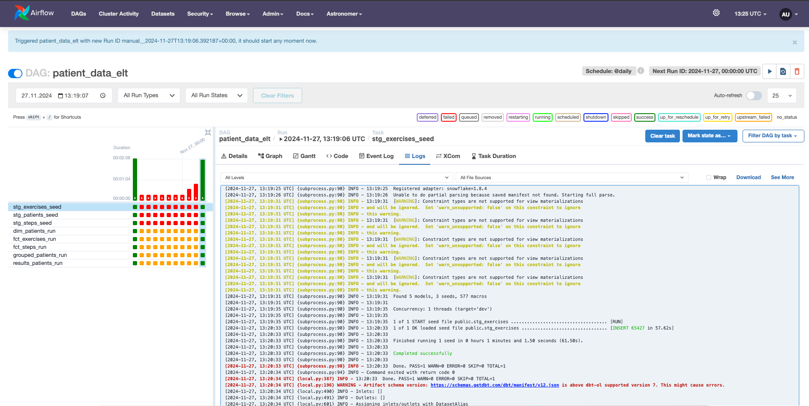

Modus Operandi
The following document aims to gather all the steps I thought about during the development of the technical challenge.
Landing the challenge
First, I read the challenge several times to makes sure I understood the task. At first glance, it does not seem a very complex task, also the datasets are not very big so I suppose I will not have any issues processing the data.
The final output is based on the join of patients with steps and exercises accordingly and calculating the maximum sum of minutes (coming from steps and exercises) grouped by patient.
Infrastructure discussion
Since I am familiar with Airflow and dbt (I did no use it in 2 years so lets see what changed) and the challenge itself does not seem extremely complex I would love to invest some time in creating a proper infrastructure: - Dockerized Airflow and DBT with connection to Snowflake
However, I have never deployed Airflow locally from scratch (everywhere I went, it was already there) so I will leave deploying dbt in Airflow for the end.
I decided to use Snowflake as database based on: - I did not use it before and I want to learn a new DB engine. - It was listed in the nice-to-have list of the job offer.
Also, I would like to implement data QA tests (table constraints, business criteria and schema checks), a CI/CD pipeline to automate python tests, add renovate bot to the repository and documentation deployment to the git project ,but we will see how it goes.
Not sure if I will create a dashboard for the results, but it would be nice as
well. I have some ideas for other KPIs:
- Apart from total_minutes, we can show as well the minutes coming from
steps and the ones coming from exercises, it could be a useful KPI to get more
insights about the rehabilitation.
- We can also split the maximum total minutes per country and, as in the
previous point, split it in exercises and steps.
- Steps and exercises submission_time(s) graphs (respectively) , it would be
great to know when (along the year) are usually the patients doing more steps
and exercises, maybe it has some effect on their rehabilitation time.
Setting up Github
I am not sure if it is relevant but as I am using a laptop with an already paired Gitlab account, I had to create another SSH key and assign this new SSH key to the Github account I am going to use for the challenge:
ssh-keygen -t ed25519 -C "my@mail.com"
ssh-add --apple-use-keychain ~/.ssh/my_id
nano /Users/jonfernandez/.ssh/config
And here add:
Host *
UseKeychain yes
AddKeysToAgent yes
IdentityFile ~/.ssh/my_id
cat ~/.ssh/my_id.pub
as always. Finally, and I think this changed recently, I had to log in with
github-cli gh auth login.
Setting up Snowflake
I am starting by setting up the Snowflake user for dbt as recommended in one of the Snowflake's quickstart guides.
USE ROLE SECURITYADMIN;
-- We create the role that DBT user will use: dbt_developer_role
CREATE OR REPLACE ROLE dbt_developer_role COMMENT='DBT developer role';
GRANT ROLE dbt_developer_role TO ROLE SYSADMIN;
-- Create the DBT user
CREATE OR REPLACE USER dbt_user PASSWORD='dbt_password'
DEFAULT_ROLE=dbt_developer_role
DEFAULT_WAREHOUSE=dbt_warehouse
COMMENT='DBT User';
GRANT ROLE dbt_developer_role TO USER dbt_user;
-- To grant privileges to the role we need to use a role with higher permissions
USE ROLE ACCOUNTADMIN;
GRANT CREATE DATABASE ON ACCOUNT TO ROLE dbt_developer_role;
USE ROLE SYSADMIN;
-- Create Warehouse for DBT
CREATE OR REPLACE WAREHOUSE dbt_developer_warehouse
WITH WAREHOUSE_SIZE = 'XSMALL'
AUTO_SUSPEND = 120
AUTO_RESUME = true
INITIALLY_SUSPENDED = TRUE;
GRANT ALL ON WAREHOUSE dbt_developer_warehouse TO ROLE dbt_developer_role;
Early data model approach
After that, we create the data model for our patients, exercises and steps. The assumptions and standards I chose to follow:
- We prefer plural from singular table namings so as SQL code is more
intuitive:
SELECT * FROM patients; - We prefer explicit over implicit type definition (i.e. we use
NUMBER(38,0)instead ofINTEGERso the amount of decimals is properly defined in the code even thoughNUMBER(38,0)is the standard in Snowflake for numeric data types) - Same goes for string data types, we will be using
VARCHAR(16777216)which would be the same as usingVARCHARbut we rather define the maximum length of the field in our code. - It would be great to align with the team in charge of building the source of the data so as we can define properly the limits of the values in the columns and use it as a second type validation.
- In exercises and steps tables,
external_idcolumn names will be modified topatient_id. - For the timestamp columns, I used TIMESTAMP_TZ Snowflake type since,
in the data, it looks like the UTC offset is defined after the timestamp
(i.e.
2024-04-11T14:25:23.708+0200). However, we will need to take into account thatAttentionsection defined in the documentation when using this field for creating KPIs, since the offset of some countries change during the year but not the value of the field. If possible I would ask the team in charge of creating the source data to send us the values of the TIMEZONE together with the timestamp (without the UTC offset in this case) so as we can calculate the UTC time in place when needed. - In steps tables,
submission_timecolumn name will be modified tosubmitted_at, like that all the columns with typeTIMESTAMP_TZwill have the same suffix and we will be able to identify the type of the column by its name. - When trying to test how Snowflake is reading the timestamp values from the
spreadsheet
SELECT '2023-04-19T19:03:58.0520200'::TIMESTAMP_TZI gotTimestamp '2023-08-04T21:26:24.871+0200' is not recognizedso I tried:
ALTER SESSION SET TIMESTAMP_TZ_OUTPUT_FORMAT = 'YYYY-MM-DDTHH24:MI:SS.FF3TZHTZM';
It looks like it can read it know, we will take care of this when importing the data to Snowflake.
The table creation script I used for the staging tables is the following:
CREATE OR REPLACE DATABASE caspar_health;
USE ROLE dbt_developer_role;
CREATE TABLE stg_patients (
row_id NUMBER(38, 0),
patient_id NUMBER(38, 0),
first_name VARCHAR(16777216),
last_name VARCHAR(16777216),
country VARCHAR(16777216)
);
CREATE TABLE stg_exercises (
id NUMBER(38, 0),
external_id NUMBER(38, 0),
minutes NUMBER(38, 0),
completed_at VARCHAR(16777216),
updated_at VARCHAR(16777216)
);
CREATE TABLE stg_steps (
id NUMBER(38, 0),
external_id NUMBER(38, 0),
steps NUMBER(38, 0),
submission_time VARCHAR(16777216),
updated_at VARCHAR(16777216)
);
ALTER SESSION SET TIMESTAMP_TZ_OUTPUT_FORMAT = 'YYYY-MM-DDTHH24:MI:SS.FF3TZHTZM';
Setting up DBT
Setting up the Python environment
I am going to be using uv as a python package manager to start with the dbt dependencies. It is being a while since I wanted to try uv out, is supposed to be very fast.
brew install uv
uv init caspar_health_technical_challenge
uv add dbt-core
uv add dbt-snowflake
*Yes, it was fast indeed.
I am not using dbt-cloud since looks expensive for what it offers and it is
not really complicated to set up and deploy dbt-core but maybe I regret it.
I run dbt init to create the dbt project. Then, dbt deps to install the
dependencies (dbt-labs/dbt_utils). The dbt profile would look as follows:
caspar_health_technical_challenge:
outputs:
dev:
account: RG94457.EU-CENTRAL-1
database: CASPAR_HEALTH
password: dbt_password
role: dbt_developer_role
schema: rehabilitation_data
threads: 1
type: snowflake
user: dbt_user
warehouse: dbt_developer_warehouse
target: dev
It took me some time to figure the Snowflake connection parameters out to create the dbt profile, more specifically; - account: I had to run a query on Snowflake to get it.
SELECT CONCAT_WS('.', CURRENT_ACCOUNT(), REPLACE(REGEXP_REPLACE(CURRENT_REGION(), '^[^_]+_',''), '_', '-')); -- e.g.: `YY00042.EU-CENTRAL-1`
I added a generate_schema_name and set_query_tag macros as recommended
in the Snowflake quickstart guide I am following.
Loading raw data
After setting up dbt, I decided to try to import the raw data into Snowflake.
I added the CSV files into the seeds folder and tried to run dbt seed
but I got the following error:
Runtime Error
Database error while listing schemas in database "CASPAR_HEALTH"
Database Error
002043 (02000): SQL compilation error:
Object does not exist, or operation cannot be performed.
And since I could not see the query, I went to the logs, and apparently I was
trying to run show objects in CASPAR_HEALTH.rehabilitation_data limit 10000
but, of course, rehabilitation_data schema does not exist, it should
be public instead. For some reason, I thought that DBT was creating a
new schema when adding data from seeds.
I took the decision of adding the stg suffix to the tables names containing
raw data as specified in dbt documentation. I learned that, according to this
post,
apparently dbt seeds is not the greatest option to bulk raw data into
Snowflake and, honestly, I would rather define a dbt model with
COPY INTO table clause, but I do not have any personal cloud storage
account so I am going with dbt seeds for this very specific challenge.
The data bulk worked with no issue for steps and exercices, however, for
patients, I had to use --full-refresh option (only for the very first time
we bulk the data) since the 1st column name is empty. Due to that, the 1st
column name for this table will have A as a column name instead of row_id
as planned. We could have avoided this by loading the data directly from a
cloud storage and just not selecting that column. I am not planning on using
the column anyway in further tables, so it should not be an issue.
Dimensions and facts
Once our raw data has been loaded, is time to discuss which transformations we will be doing to our data.
For this specific case and with no further knowledge about future
requirements, I would go with a simple dimensions and facts data model design
where Patients will be the main dimension and Steps and Exercises the
facts that do not make sense without our dimension. The data model design
has not a big impact in this specific case apart from helping understand our
data and defining the primary keys (id in patients) and foreign keys
(patient_id in steps and exercises).
This tables will be kept in transform schema (as defined in the
Snowflake guide we are following) since they are part of the base layer of our model, and
they all should have a seed or raw data as source. In this state
we will be taking care of the transformations mentioned in section
Early data model approach and automatic dbt
data QA tests defined on the table constraints such as:
- primary keys (unique, not null)
- foreign keys (referenced to the origin)
- type validation
I added not null constraint to almost every field in the data model because
the data shows that it is possible, however, it would be great to confirm
and truly redefine which columns expect null values and which do not.
Since we do not have any constraint in one model that applies to multiple
columns, we will be only defining column-level constraints and not
model-level constraints. Also, we are going to use one file per model to
define the schema instead of defining all the schemas in the same file so
the code structure scales up in a clean and organized way.
Analysis tables
Finally, we are building two analysis tables and we will be using analysis
schema for that.
First, we will join patients data with steps and exercises data so as we can
group it and sum it. We will also be creating the KPI total_minutes, a sum of
the minutes coming from steps and exercises, so as we can get the maximum
value(s) in the last results table. And last but not list, we will create a
column with a RANK() window function ordered by total_minutes descendant,
which will return the same value in case the maximum value is repeated for
different patients.
Second, we will obtain our aimed KPI filtering the rank field we created in the
previous table with 1.
SELECT *
FROM caspar_health.analysis.results_patients;
| patient_id:int | first_name:str | last_name:str | country:str | total_minutes:number(38,3) |
|---|---|---|---|---|
| 356134 | Austin | Ellis | Germany | 54954235.000 |
*_total_minutes column is decimal type (and it was proposed to be int
type) since one of the columns involved in the KPI had 3 decimals as well.
I would love to create more KPIs as defined in Infrastructure discussion section, but I am going to focus on deploying dbt in Airflow, adding python pytest tests, sqlfluff, ruff and proper documentation first.
Setting up Airflow
Following the Snowflake guide we might need to get rid of uv for setting up python requirements and go with plain pip requirement management. We will now prepare the repository for encapsulating our model creation with dbt inside an airflow repository ready to be deployed.
We can create a dockerized airflow repository by creating a new folder and
running astro dev init (from astro), after that I will just add all my dbt packages
inside dags/dbt/caspar_health_dbt_cosmos folder.
Setting up the DAG
The patient_data_elt DAG is only composed by:
1. Dbt profile definition: Which basically, thanks to a very cool cosmos
library, reads all the credentials from the predefined Airflow connections in
airflow_settings.yaml. Given the use case, I am not going to spend more time
trying to hide the secrets since in a real-life scenario I would just use
Airflow AWS Secrets Manager Backend
for getting the credentials of the connections.
2. Dbt DAG: We create tasks that run every existing model in
DBT, even the seeds creating a DbtDag module.

Astro and cosmos
I did not use astro and cosmos until today and is crazy how easy they make:
- Astro: It deploys the webserver, the scheduler and the trigger
(I guess this is the Celery queue). I just did not need to think about it,
which is nice for this use case. However, I can imagine that those layers of
abstraction that adds on top of Airflow might be a bit cumbersome when we want
to adjust Airflow to some specific needs. Also, it took me quite some time to
discover how to deploy the connections defined on airflow_settings.yaml:
astro dev object import
astro dev restart
- Cosmos: I really do not have any complains about it for now but again, it could be not the best option if we want to really get the most out of dbt.
Setting up tests (TNDD)
Well, I would have loved to apply TDD during the development of these tasks, however, I got excited by the use of uv at the beginning and I forgot about it. That is why we will can call it Test Non Driven Development in this case.
I did not add any python tests myself since I did not see the case for it, maybe it would have been great to: - Test somehow the connection with Snowflake (with a given dbt profile) - Test the output of the dbt models somehow.
What I did add is sqlfluff and ruff, which are very nice SQL and python linters that help so much following predefined code standards.